Кнопки
Кнопки являются одним из самых понятных и интуитивных элементов интерфейса. После того, как пользователь вводит запрашиваемую информацию, кнопки позволяют пользователю пустить эту информацию в дело. По их виду сразу становится понятно, что единственное действие, которое с ними можно производить — это нажимать на них. За счёт этой особенности кнопки часто применяются в формах, особенно при их отправке и очистке.
Кнопки на веб-странице можно создать несколькими способами — с помощью элемента <input> или элемента <button>.
<input>
Рассмотрим вначале добавление кнопки через <input> и его синтаксис.
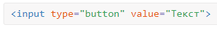
Атрибуты кнопки перечислены в табл. 1.
| Атрибут | Описание |
|---|---|
| name | Имя кнопки, предназначено для того, чтобы обработчик формы мог её идентифицировать. |
| disabled | Блокирует кнопку и не позволяет на неё нажимать. |
| form | Идентификатор формы для связывания кнопки с элементом <form>. |
| type | Для обычной кнопки значением является button. |
| value | Надпись на кнопке. |
| autofocus | Кнопка получает фокус после загрузки документа. |
Создание кнопки показано в примере 1.
Пример 1. Добавление кнопки
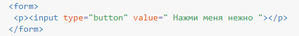
Примите во внимание, что учитываются все пробелы в надписи на кнопке, в отличие от обычного текста HTML, поэтому можно ставить любое количество пробелов, которые в итоге влияют на ширину кнопки. Но правильнее, конечно же, задавать вид кнопки через CSS.
Для таких кнопок есть ряд обязательных правил:
- <input> нельзя вкладывать внутрь ссылки <a>;
- <input> нельзя вкладывать внутрь кнопки <button>;
- значение атрибута value не может быть пустым.
<button>
Второй способ создания кнопки основан на использовании элемента <button>. Он по своему действию напоминает результат, получаемый с помощью <input>. Но в отличие от него предлагает расширенные возможности по созданию кнопок. Например, на подобной кнопке можно размещать любые элементы HTML, включая изображения и таблицы. На рис. 2 показаны разные виды кнопок, полученные с помощью <button>.
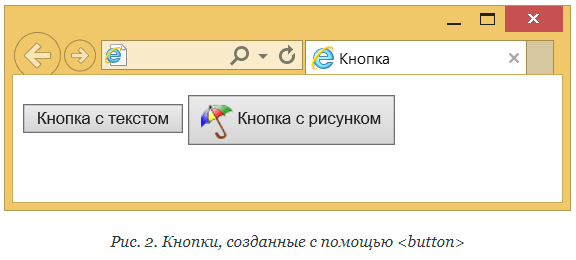
Синтаксис создания такой кнопки следующий.
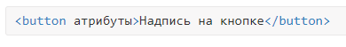
Атрибуты перечислены в табл. 1, но в отличие от кнопки <input> атрибут value определяет только отправляемое на сервер значение, а не надпись на кнопке. Если требуется вывести на кнопке изображение, то элемент <img> добавляется внутрь <button>, как показано в примере 2.
Пример 2. Рисунок на кнопке
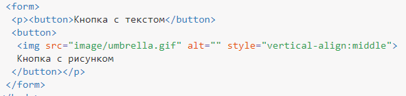
В данном примере показано создание обычной кнопки с текстом, а также кнопки с одновременным использованием текста и рисунка. Размер кнопки зависит от содержимого <button>, но пробелы игнорируются, поэтому простым увеличением их количества, как в случае использования <input>, ширину кнопки изменить не удастся.
Для <button> также есть ряд ограничений:
- <button> нельзя вкладывать внутрь ссылки <a>;
- один <button> нельзя вкладывать внутрь другого.
Кнопка Submit
Для отправки данных на сервер предназначена специальная кнопка Submit. Её вид ничем не отличается от обычных кнопок, но при нажатии на неё происходит переход к обработчику формы по адресу, указанному атрибутом action элемента <form>. Программа-обработчик, получает данные, введённые пользователем в полях формы, производит с ними необходимые манипуляции, после чего возвращает результат в виде HTML-документа. Что именно делает обработчик, зависит от автора сайта, например, подобная технология применяется при создании опросов, форумов, тестов и многих других вещей.
Синтаксис создания кнопки Submit зависит от используемого элемента <input> или <button>.
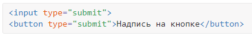
Атрибуты те же, что и у рядовых кнопок (пример 3).
Пример 3. Отправка данных на сервер
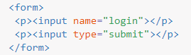
Атрибут name для этого типа кнопки можно не писать. Если не указать значение value, то браузер самостоятельно добавит текст, он различается в зависимости от браузера. Так, Firefox пишет «Отправить запрос», IE — «Подача запроса», Opera и Chrome — «Отправить». Сам текст надписи никак на функционал кнопки не влияет.
Кнопка Reset
При нажатии на кнопку Reset данные формы возвращаются к первоначальным значениям. Как правило, эту кнопку применяют для очистки введённой в полях формы информации. Для больших форм от использования кнопки Reset лучше вообще отказаться, чтобы по ошибке на неё не нажать, ведь тогда придётся заполнять форму заново.
Синтаксис создания указанной кнопки прост и похож на другие кнопки.
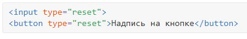
В примере 4 показана форма с одним текстовым полем, которое уже содержит предварительно введённый текст с помощью атрибута value элемента <input>. После изменения текста и нажатия на кнопку «Очистить», значение поля будет восстановлено и в нём снова появится надпись «Введите текст».
Пример 4. Кнопка для очистки формы
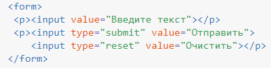
Значение кнопки Reset никогда не пересылается на сервер. Если надпись на кнопке не писать, иными словами, не задавать атрибут value, на кнопке по умолчанию будет добавлен текст «Очистить».
Цветные кнопки
Вид и цвет кнопок зависит от операционной системы и браузера. Тем не менее можно изменить цвет кнопок по своему усмотрению, воспользовавшись стилями. Для этого требуется только добавить к кнопке свойство background, как показано в примере 5. Дополнительно можно поменять цвет текста и другие параметры. Помните про одну особенность — как только вы меняете цвет фона, кнопка становится приподнятой, поэтому для «плоских» кнопок надо добавить ещё рамку, пусть даже прозрачную.
Пример 5. Вид кнопок
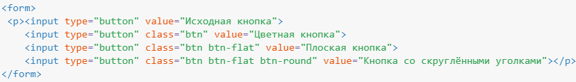
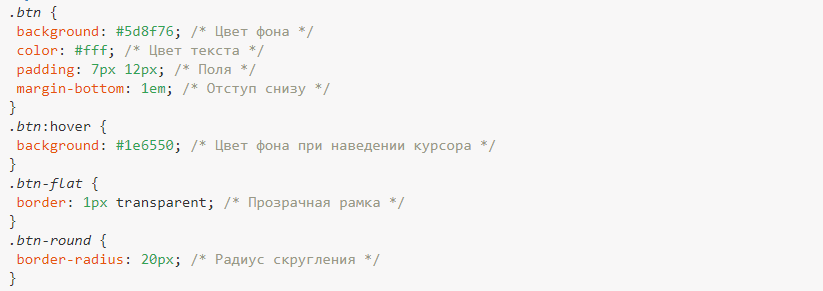